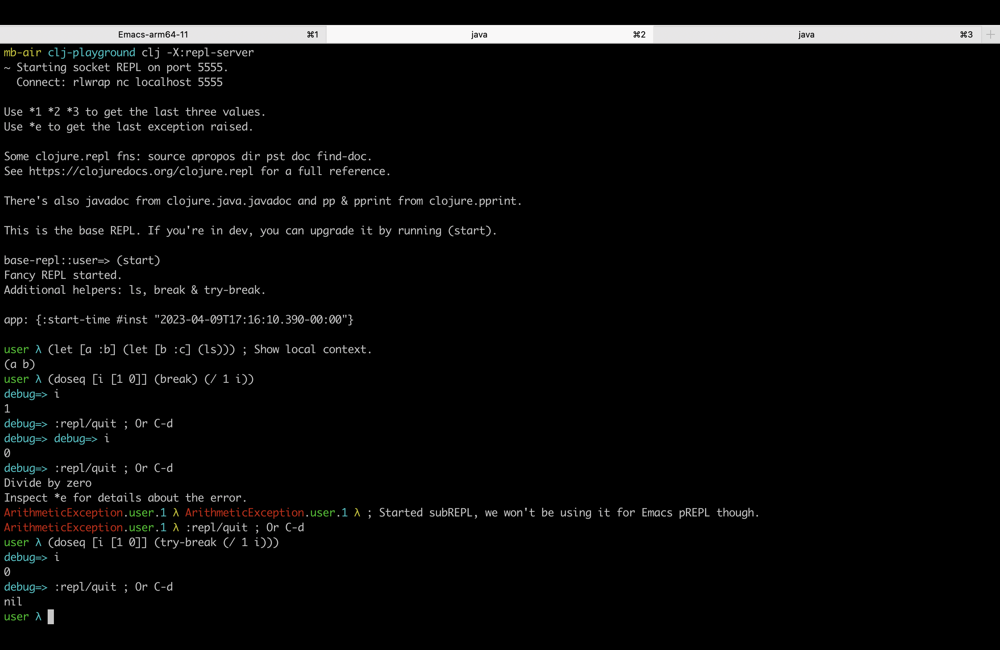

Emacs pPREPL exploration
1. Context
I'm relatively new to Clojure and I'm looking for a REPL workflow that'd suit me.
I was shocked to find out that the typical REPL workflow in Clojure does NOT include any subREPLs (since typical implies nREPL-based as of 2023). That's embarrassing in general, even more so given how much Clojure folks like to boast about RDD!
What are subREPLs good for? Glad you asked:
1.1. Example: launching subREPL in a catch block
require 'pry' begin local = "test" 1 / 0 rescue Exception => e binding.pry # inspect local, e. end
Translated to human speak, if an error happens, you'll get a subREPL that has access to that error object as well as to any local context at that point such as local variables.
1.2. Example: launching subREPL in reduce
require 'pry' {a: 1, b: 2, :c 3}.reduce(0) do |acc, (k, v)| binding.pry # inspect acc, k v. acc + v end
These reduce blocks can get pretty complex rather tricky. Why I'm getting v of :weird-value? Let me inspect!
1.3. nREPL-based tools
These were things I was routinely using when doing Ruby. Having them in Clojure is an absolute necessity for me. nREPL doesn't support subREPLs. That's a deal breaker for me, no matter how nice Cider is.
1.4. Exploring inf-clojure
inf-clojure is a simple socket-REPL-based package for Emacs. The trouble is it's too simple: it has no idea what's being printed out to STDOUT/STDERR and what's the return value.
Do I care? I wouldn't, except that it has a very serious impact on my workflow: it forces me to have my code open constantly in a split view with a REPL by its side.
I use MacBook Air. It's got 13" screen. Plus I like to use a large font (~18pt). My whole screen is around 120 characters. There's no chance in hell I'm going to make that some measly 60!
1.5. Conclusion
I haven't found any Emacs plugin that'd fit my needs. Which leads me to…
2. Emacs pREPL
I need a pREPL-based Emacs plugin that allows me to keep working in my code buffer and only switch to the split view with REPL when I want to use the REPL (such as when I add a breakpoint, more on it later). It should show the evaluation results (C-x C-e and the likes) in the source buffer temporarily, just like Cider does.
2.1. Clojurians Slack announcement in #emacs
At this stage I'm 100% decided I'm doing it and I'm doing exploratory works, so far just in terms of the desired workflow:
- I have
(doseq [i [1 0]] (break) (/ 1 i))working (:repl/quitorC-dquits the breakpoint and make it proceed to the next expression. - Starting subREPLs automatically on error is fun when typing into the REPL, but useless for Emacs, as any error would mean having to switch to the REPL buffer and send
:repl/quit. That'd get old pretty bloody fast. - So instead one would set manually when they want to drop into a subREPL using something akin to
(doseq [i [1 0]] (try (/ 1 i) (catch Exception e (break)))). I already have a macro for it, so it boils down to(doseq [i [1 0]] (try-break (/ 1 i))). You do have access to the value of i there obviously, that's the whole point of this little exercise!
Obviously this would just come as an optional utils library, anyone's free to use whatever they please!
Now I think this is a good starting point for me to actually start diving into the Elisp part (next weekend?). I know feck all about Elisp (whopsie!), which is why I'd really appreciate someone joining me in this endeavour, but one way or the other, it's a tool I want and need and it's gotta happen sí o sí.
I'm also working full-time, so the timeline is in the air, but either way it's high priority thing for me (also subject to how badly do I need it in my work).
The initial version will concentrate on one single thing: making C-x C-e (eval last sexp) work with displaying result in the source buffer temporarily, just like Cider does with a caveat:
- STDOUT/STDERR will only get shown in the REPL buffer itself.
- Return value will get shown in the source buffer Cider-style.
- Any error will also get shown in the source error (something like
#error {:message (ex-message *e)}possibly also with:data (ex-data *e), although that might require some truncating, whatever.
That way I know if the code I'm working on works and if not, the short message summary is usually enough to know what the problem is, if not, go play in the REPL buffer to find out (inspect *e or add a (break)).
Unlike in Cider this workflow would require some typing into the REPL. Right, that's why we start the bloody subREPLs in the first place, so we can go and inspect what's going on there.
Say you have (doseq [i [1 0]] (try-break (/ 1 i))). Run C-x C-e on it. Then you have to switch to the REPL and do whatever you gotta do! Inspecting the value of i typically. When done, :repl/quit or C-d to move on.
2.2. Request for involvement
- I appreciate any feedback esp. regarding the workflow. What works for you? What am I missing? This is the bread and butter of the Clojure dev experience and I want it to work well.
- Early testers? Contributors?
3. Proof-of-concept
3.1. pREPL example
3.1.1. Deps
{:paths ["src"]
:aliases
{:repl-server
{:extra-paths ["dev"] ; This makes dev/user.clj to load.
:extra-deps {mvxcvi/puget {:mvn/version "1.3.4"}}
:exec-fn jakub-stastny.dev.repl.server/start-server
:exec-args {:name "repl-server"
:port 5555
:accept jakub-stastny.dev.repl.server/repl
:server-daemon false}}}}
3.1.1.1. Usage
clojure -X:repl-server clojure -X:repl-server :port 1234
3.1.1.2. Refs
3.1.2. REPL server
(ns jakub-stastny.dev.repl.server (:require [clojure.core.server :as rs])) (defn repl [] (clojure.main/repl :init rs/repl-init :read rs/repl-read :prompt #(print (str "base-repl::" (ns-name *ns*) "=> ")))) (defn start-server [{:keys [port] :as opts}] (println (str "~ Starting socket REPL on port " port ".")) (println (str " Connect: rlwrap nc localhost " port)) (println) (println "Use *1 *2 *3 to get the last three values.") (println "Use *e to get the last exception raised.") (println) (println "Some clojure.repl fns: source apropos dir pst doc find-doc.") (println "See https://clojuredocs.org/clojure.repl for a full reference.") (println) (println "There's also javadoc from clojure.java.javadoc and pp & pprint from clojure.pprint.") (println) (println "This is the base REPL. If you're in dev, you can upgrade it by running (start).") (println) (future (rs/start-server opts)) (repl) ; Without this, :repl/quit or C-d won't exit the socket server. (System/exit 0))
3.1.3. Enhanced REPL
Tools for dealing with pREPL.
(ns jakub-stastny.dev.repl (:require [clojure.string :as str] [clojure.core.server :as rs] [puget.printer :as puget])) ; This wouldn't be in the Emacs version, obviously. (def colours {:red 31 :green 32 :yellow 33 :blue 34 :purple 35 :cyan 36 :grey 37}) (defn colour "Wraps text in ANSI colour escape sequence" [colour text] (if-let [colour-code (colours colour)] (str "\033[" colour-code "m" text "\033[0m") text)) ; @phronmophobic: ; Instead of embedding the values, I would use eval to create a function and call it: ; You can also do something like save the values in a dynamic variable and then grab the values inside of the eval from the dynamic variable, but I think wrapping in a function is more explicit and less brittle. (defn contextual-eval [ctx expr] (let [f (eval `(fn [~@(keys ctx)] ~expr))] (apply f (vals ctx)))) (defmacro local-context [] (let [symbols (keys &env)] (zipmap (map (fn [sym] `(quote ~sym)) symbols) symbols))) ; Do NOT extract :eval into a method or the local-context will get lost. (defmacro break [] `(do (clojure.main/repl :prompt #(print (colour :cyan "debug=> ")) :read rs/repl-read :eval (partial contextual-eval (local-context)) :print prn ;; puget.pprint ))) (defmacro try-break [expr] `(try ~expr (catch Exception ~'*e (break)))) ; TODO: make this a command "ls" so we don't have to type "(ls)". This needs overriding read. (defmacro ls [] `(keys (local-context))) (def nesting-level (atom 0)) (defn error-prompt [e] #(print (str (colour :red (last (str/split (str (type e)) #"\."))) "." (colour :green *ns*) "." (colour :cyan @nesting-level) (colour :yellow" λ ")))) ;; repl-read respects :repl/quit (declare handle-error) (defmacro start-nested-repl [*e] `(do (println "Inspect *e for details about the error.") (clojure.main/repl :prompt (error-prompt ~'*e) :caught handle-error :eval (partial contextual-eval (local-context)) :read rs/repl-read :print prn ;; puget.pprint ))) (defn handle-error [*e] (swap! nesting-level inc) (println (ex-message *e) (or (ex-data *e) "")) (start-nested-repl *e) (swap! nesting-level dec)) (defn upgrade-init [] ;; Here we might do some requires like Clojure does: ;; https://github.com/clojure/clojure/blob/master/src/clj/clojure/main.clj#L355 ;; I've seen a better approach for :eval to wrap the whole code in (do (require...) (code)) so it's available anywhere, although that can easily lead to code that works only in the REPL. (rs/repl-init)) ; This REPL is meant to be used as Pry in Ruby. (defn upgrade-repl [] (clojure.main/repl :caught #'handle-error :prompt #(print (str (colour :green (ns-name *ns*)) (colour :cyan" λ "))) :print prn ; TODO pretty-print :init #'upgrade-init :read rs/repl-read))
3.1.3.1. TODO Recover from C-c
3.1.3.2. TODO Upgrade to pREPL in (start)
3.1.4. User: our starting point
This will serve us as a playground, let's pretend this is the project we're working on.
Start a normal socket REPL, upgrade to pREPL at the beginning of the client session.
It'll get loaded automatically when we run clojure X:repl-server and it runs before the server starts.
(ns user (:require [jakub-stastny.dev.repl :refer (upgrade-repl break try-break ls)])) (defn start [] ; http://thinkrelevance.com/blog/2013/06/04/clojure-workflow-reloaded (def app {:start-time (new java.util.Date)}) ; Or (System/currentTimeMillis) (println "Fancy REPL started.") (println "Additional helpers: ls, break & try-break.") (println) (println "app:" (pr-str app)) (println) (upgrade-repl)) (comment (start) ; Show local context. (let [a :b] (let [b :c] (ls))) (doseq [i [1 0]] (break) (/ 1 i)) ; Use :repl/quit or C-d to continue. (doseq [i [1 0]] (try-break (/ 1 i))) ;; ExceptionInfo with data. (throw (ex-info "Error" {:tired true})) *e (ls) {:message (ex-message *e) :data (ex-data *e)} ;; Other exceptions. (conj {} 1) {:message (ex-message *e) :data (ex-data *e)} ,)

3.2. TODO Emacs pREPL
The next step!
If you're interested in the project, join us at #emacs-prepl on Clojurians Slack!
4. Resources
- scimacs (sci in Emacs) and clj2el.
- Emacs EDN parser parseedn.
- https://tonsky.me/blog/clojure-sublimed-3/
- propel.
- Clojure socket pREPL cookbook.
- How to use Clojure pREPL.